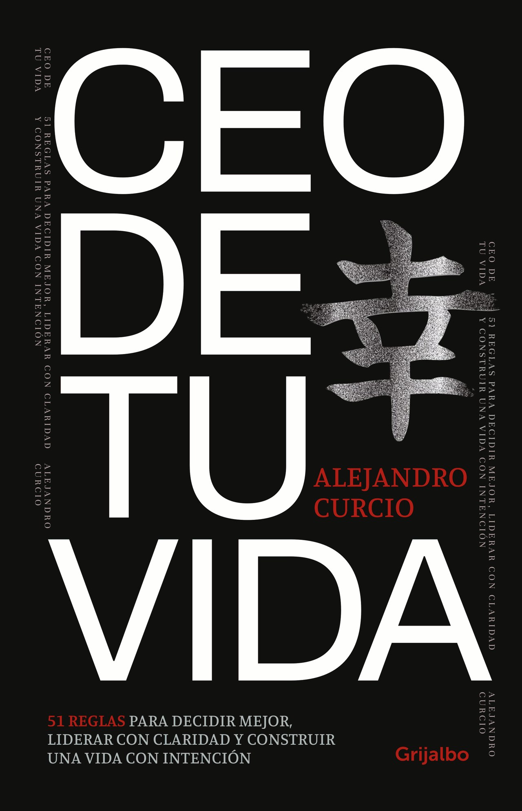

CEO DE TU VIDA
51 reglas para decidir mejor, liderar con claridad y construir una vida con intención.
El tercer libro de Alejandro Curcio. Después de mirar hacia adentro (Capital de Vida) y de entender lo que viene (Toolbook), este es el de hacerse cargo.
Lo quiero
El libro empezó en una playa de Okinawa.
Alejandro entró a la empresa familiar siendo casi adolescente. A los 25 ya dirigía la compañía, con un padre que le llevaba más de cincuenta años.
En 2023 viajó a Japón con su hijo Lucca. Toyota Motor Corporation había organizado un encuentro de presidentes de distintos países junto a las segundas y terceras generaciones de sus familias empresarias. El tema declarado era el negocio. El tema real era el legado.
Después de Tokio fueron a Okinawa. Una mañana caminó solo por la playa, con el mar calmo y en silencio. De ahí salieron las preguntas que originaron este libro.
CEO DE
TU VIDA
Una serie de reglas con historias y aprendizajes sobre liderazgo personal, resiliencia y toma de decisiones — principios aplicables a emprendedores, ejecutivos e inversores. Después del interior y el exterior, llega el método. Forjado, no heredado.